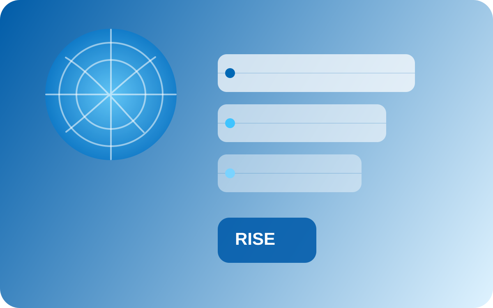
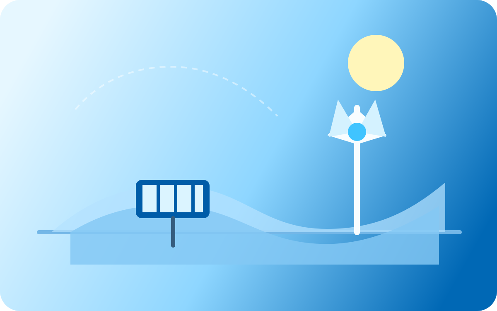
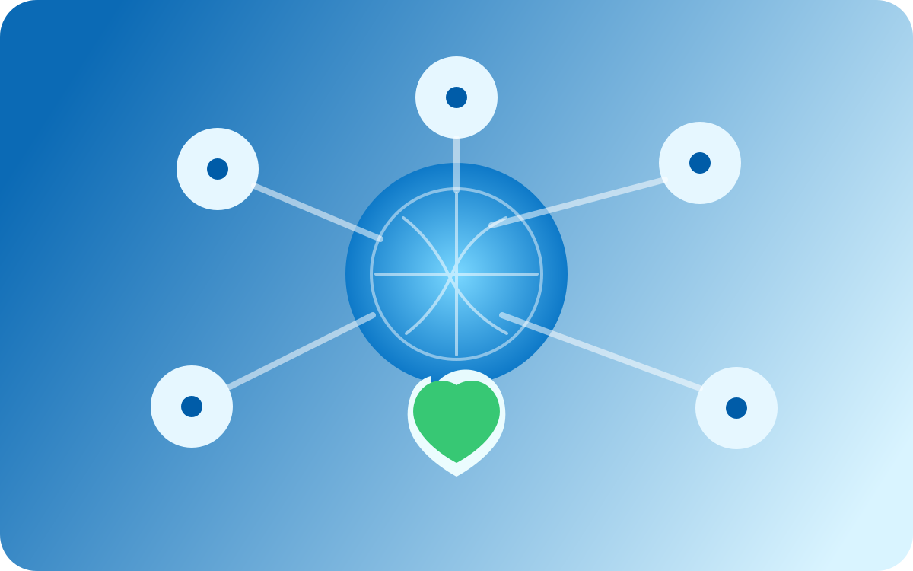

RISE Strategy
Under its RISE (Responsible, Inclusive, Sustainable, Enabling) strategy, Intel sets 2030 goals spanning climate action, water stewardship, and waste reduction.
Learn moreInteractive Web Experience
This page presents major sustainability focus areas through a flexible, touch-friendly timeline that shifts from horizontal exploration on larger screens to a clear vertical reading flow on smaller devices.
Responsive layout
Each milestone card highlights a year, title, and visual by default. Additional details appear smoothly on hover and keyboard focus, while the same content remains accessible on touch devices through the card summary control.
Timeline
On desktop, scroll horizontally through the timeline. On tablet and mobile, the cards stack vertically for easier reading.

Intel's RISE framework grouped responsibility, inclusion, sustainability, and technology leadership into a clearer public plan. It gave later environmental goals a structure that could be tracked over time.

A strong renewable-energy focus supports lower operational emissions and connects Intel's manufacturing footprint to broader clean-energy adoption.
Intel's public 2030 sustainability direction emphasizes restoring more fresh water than it consumes and reducing waste through reuse, recycling, and landfill-diversion programs.
The net-zero operations target points toward major changes in energy sourcing, process efficiency, and facility design across Intel's manufacturing environment.

A longer-range sustainability outlook depends on collaboration across manufacturing, logistics, and supplier relationships, not only direct emissions inside Intel facilities.
Focus areas
Under its RISE (Responsible, Inclusive, Sustainable, Enabling) strategy, Intel sets 2030 goals spanning climate action, water stewardship, and waste reduction.
Learn moreIn 2022, Intel pledged to reach net-zero greenhouse gas emissions (Scope 1 and 2) by 2040, building on decades of environmental initiatives across the semiconductor industry.
Learn moreIntel restores billions of gallons of water each year and upcycles materials to reduce waste, working with local communities to advance a circular economy.
Learn moreQuestions
Stay informed
Get Intel's latest climate, water, and clean-tech updates in your inbox.